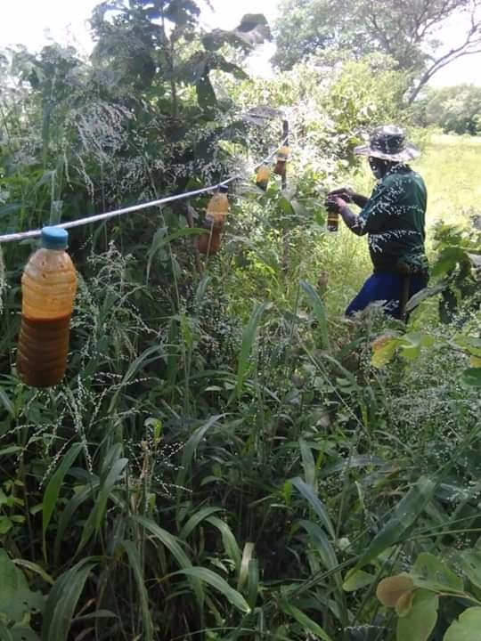
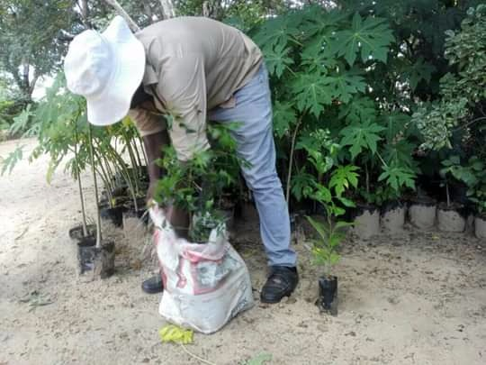
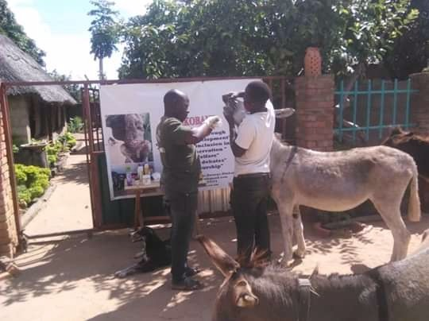

Animal Programs
Protecting our Animals
Humane Wildlife Coexistance
Wildlife and Habitat Conservation
Animal Welfare
Humane Wildlife Coexistance
Communities in Matebelend North with highest number of National parks in Zimbabwe (Hwange National park being the largest) are among the poorest in society and they also must bear the costs of living with wildlife with little to no benefit. Our community development programs are focused on improving livelihoods of these communities whose role in conservation is crucial/vital.
Wildlife and Habitat Conservation
"Knowledge Is Power" When people have been informed about the dangers of unnecessary clearing of wildlife habitats, the number of wildlife affected will decrease, henceforth allowing nature to regain its state promoting simple chain flow in biodiversity and sustainable conservation. The outcomes of wildlife conservation efforts outside protected areas are oftened determined by local community's knowledge, attitudes, and perceptions, either positive or negative. Where wildlife is seen as a burden, local people can make conservation impossible, whereas if the wildlife is seen to have a positive benefit, the local community will themselves conserve the species.
Our conservation work, which is knowledgeable by research, acts in addressing important threats facing wildlife, its habitat, and the complete ecosystems. Our wildlife and habitat conservation projects include: Conservation Education, Tree planting, legacy restoration, awareness campaigns among others.
Animal Welfare
Working animals such as donkeys are given less attention in our communities as they are rarely vaccinated, our animal welfare projects help in giving all necessary care to those animals. We focus on dosing, vaccinating, and treating survived wounded animals from wildlife attacks as well those injured during work. We also give attention to pets such as dogs that are sick and providing food to the thin ones for them to gain weight as most of rural community dogs are rarely cared for, thus their dependence is on leftovers or when there was illegal poaching and hunting small angulates. Cats are also neglected as they are accused or related to witchcraft in the Zimbabwean context, some tend to be cruel on them and throw them away tied in sacks/bags. Thus, we are working on an ANIMAL SANCTUARY located in one of villages which will be keeping all those vulnerable pets. Within our animal welfare programs we are focused on the following: Mobile clinics Animal education Donkey Harness Making Pet feeding
